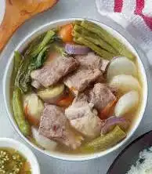
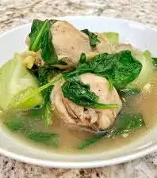
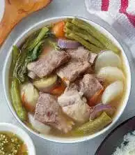
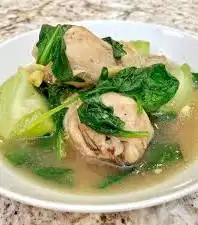

Filipino dishes are vibrant, bold and colorful. Sour, salty, sweet, even bitter flavors along with lots of garlic and ginger are prominent in so many of the dishes. Soups, stews and saucy braises are ladled along side steamed white rice for comforting and filling meals.